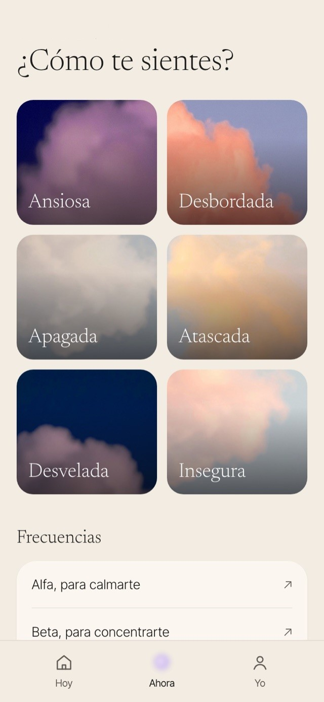
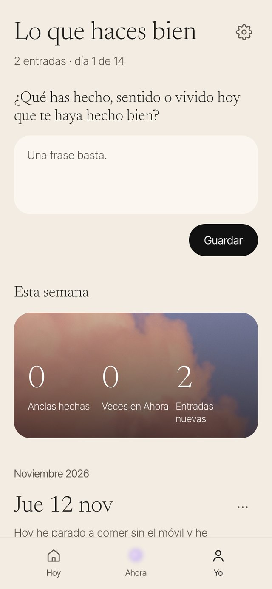
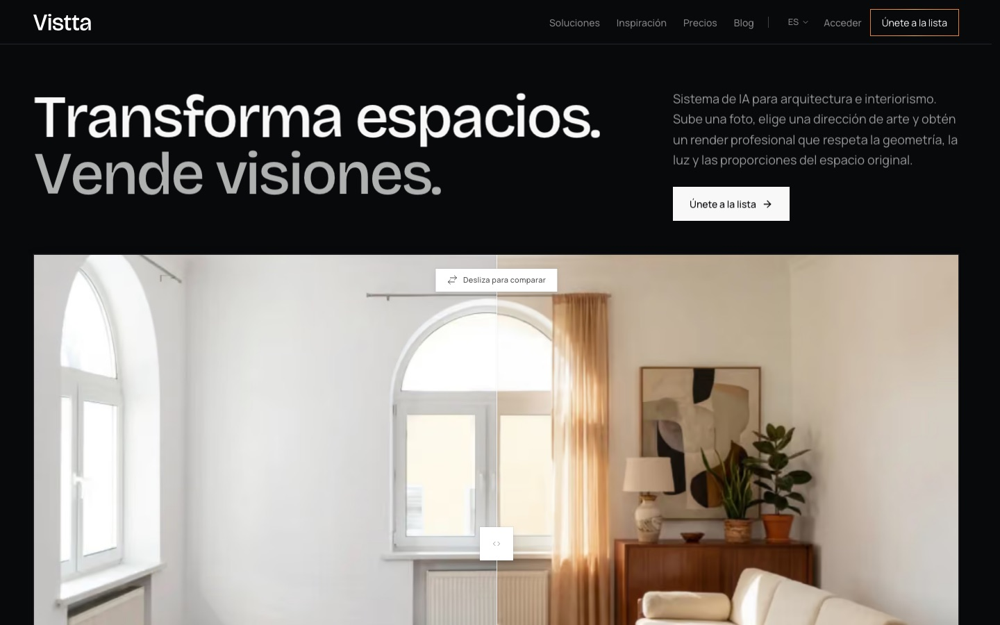

Hola, soy Yaz
Soy diseñadora creativa digital. Diseño marcas, webs y contenido para redes. La IA me acompaña en cada fase del proceso.

Mi formación une marketing y diseño de producto digital. Uso la IA para idear y producir más rápido, y reviso y retoco cada pieza a mano antes de publicarla.
- Diseño
- Figma · Adobe Creative Cloud · Webflow
- IA
- Midjourney · Runway · Higgsfield · agentes de IA
- Vídeo
- CapCut
Aire
Hecha en una semana
Una app de bienestar que te guía por +90 prácticas con base científica y facilita convertirlas en hábito.




- El reto
- Existen muchas prácticas que ayudan a sentirse mejor. En un momento de ansiedad puede ser difícil recordar cuál puede ayudarte, además de que mantenerlas en el tiempo requiere constancia.
- La solución
- «Ahora» ofrece una práctica guiada según cómo te sientes en ese momento, principalmente cuando lo sientes urgente.
«Hoy» propone hasta tres al día para que repetirlas resulte sencillo, con el sentido de cultivarlas como hábitos. - Mi papel
- Concepto, investigación, UX/UI, redacción y dirección de arte.
- La IA en el proceso
- Construí la app con agentes de IA y generé con IA los recursos visuales (imágenes del cielo). Pasé de la idea a producción en menos de una semana, con cuatro versiones probadas en uso real.
Vistta
Producto SaaS e imágenes generadas con IA
Una plataforma que convierte la foto de una estancia vacía en un render profesional para inmobiliarias y estudios de arquitectura.


- El reto
- Una estancia vacía muestra poco de lo que puede llegar a ser. Las inmobiliarias y los estudios necesitan enseñar ese potencial a sus clientes sin amueblar cada espacio.
- La solución
- Una aplicación en la que se sube la foto de la estancia y se reciben propuestas amuebladas, junto con una web que presenta el producto.
- Mi papel
- Participé de principio a fin en la investigación, el UX/UI de la web y de la aplicación, el SEO, la imagen y el marketing.
- La IA en el proceso
- Generación de imágenes con Midjourney, NanoBanana y Runway, con muchas rondas de ajuste hasta lograr resultados creíbles.
La web y todo el SaaS están construidos por completo con agentes de IA.
Motion
Una biblioteca de plantillas animadas para personalizar
Una herramienta propia que adapta cada pieza animada a los formatos de redes y anuncios.

- El reto
- Adaptar una misma pieza a cada formato, mensaje y audiencia es un trabajo repetitivo que ocupa muchas horas del equipo creativo.
- La solución
- Se elige una plantilla animada, se ajustan paleta, tipografía, foto y formato, y la variante queda lista para publicar.
- Mi papel
- Dirección de diseño del catálogo de piezas, las paletas, la tipografía y la selección de foto.
- La IA en el proceso
- La herramienta está construida con agentes de IA.
Webs
Webs diseñadas y desarrolladas para marcas de España, México y Estados Unidos.